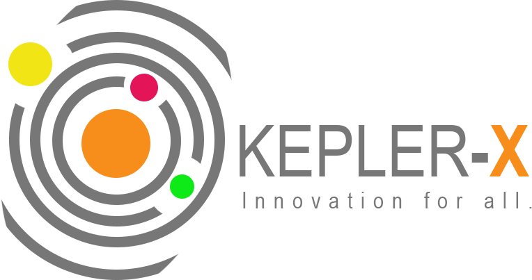

The whole limit in the system is just that there just aren't enough people who are trained and have coding skills today
The whole limit in the system is just that there just aren't enough people who are trained and have coding skills today
Kepler-X is an observatory program that aims to addresses this issue. Through disruptive teaching methods: participatory and project-based learning, hands-on activities, mentoring, presentations that would allow the students to unleash their creativity.
Easiest/most productive methods to Inspire and motivate the Students to take “STEM” more seriously and have fun while at it.
How to promote digital inclusion
Is lack of computers a reason for digital exclusion?
Can access to computers promote digital inclusion?
Is the absence of technology education part the problem?
Promotion of digitisation as a means to contribute to the Sustainable Development Goals.
Application of the 9 principles for Digital Development; for pragmatic minds.
Test the curriculum for the period of 6months.
Review of curriculum and results derived so far with the intention of having a final and disruptive curriculum which can be used anywhere in the state and across the country and still give the much desired results.
Each year, the United States invests billions in STEM education and workforce development, knowing that over 70% of their domestic and international jobs will require those core skills: science, technology, engineering and mathematics. Africa does not have a robust strategic plan on STEM policies, or even a clear framework for implementing them. It is not even clear if some national leaders understand their importance or meanings. This outsourcing of infrastructure is destroying the ability of African governments to invest in STEM skills for the future. We want to have smooth roads in Lagos, Lusaka, Nairobi and Maputo, but if we do not train our people in the right skills we will lose out as a continent These challenges gave birth to Kepler-X. Read More
Kepler-X is an observatory program that addresses vital economic issues through disruptive teaching methods. It uses project-based learning, mentoring and hackathons that would allow students to unleash their creativity.
Kepler-X is changing the phase of innovation and we are using Plateau State as a pilot scheme, the mission is to equip young people with the power to transform ideas into powerful ventures and businesses.
Kepler-X is pushing for a coding revolution across all the Secondary schools in Nigeria.
The program will engage secondary school students to develop interest in science, technology, engineering and math (STEM).
Being that STEM is one of the most important factors in creating tomorrow’s innovators and workforce.
The program is another initiative of nHub Nigeria, a technology and innovation hub that plays a leadership role in nurturing dialogue, disseminating knowledge and re-wiring the ecosystem through different community based efforts that are geared towards building a generation of new entrepreneurs, software developers and an army of skilled and employable young people matching industry needs in priority sectors.
Kepler-X will also focus on achieving the following Sustainable Development Goals stated by the United Nations: